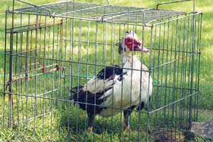
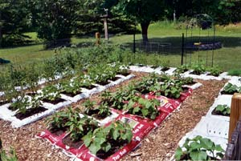
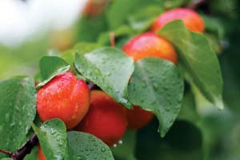

Dear Mother: October/November 2008
Letters from our readers on MAX and 100 mpg, no-dig garden beds, manure as a deer deterrent and more.
Letters from our readers
October/November 2008
Get 100 mpg - Today
I would like to applaud Jack McCornack (Here Comes the 100 MPG Car) for his efforts to help us reduce our dependence on foreign oil and the pollution our vehicles cause. I believe we will see changes in the automotive industry over the next few years, the likes of which we haven’t seen in many decades.
I’d like to remind everyone not only to drive a fuel-efficient vehicle, but also drive efficiently. Every driver should be able to obtain a 20 percent to 30 percent improvement over their vehicles’ combined EPA ratings just by modifying their driving habits. The most important tip is to slow down. In effect, you’ll spend an extra 20 to 30 cents per gallon for every 5 mph you drive above 60 mph.
I’m not waiting on the 100 mpg car - my 2000 Honda Insight has a combined rating of 53 mpg, but by modifying my driving habits I’m averaging above 100 mpg. My last 10-gallon tank covered 1,050 miles, or 105 mpg. Let us not forget the most efficient transportation is still our own two feet.
Reid Stewart
Irving, Texas
Many Roads to Fuel-efficiency
Thanks for the article on Jack McCornack’s quest to build the 100-mpg car. It’s an interesting project, and I look forward to reading more about its progress.
Looking further down the road to a post-petroleum world, I’d like to see you come up with a project to build a velomobile (i.e. a weatherproof pedal powered vehicle). A few such vehicles are available, but they’re ridiculously expensive and most don’t have cargo space for even a couple of bags of groceries.
I remember Mother Earth News published plans for a practical and inexpensive recumbent trike some years ago; perhaps these plans could be dusted off and brought up to date!
Robb Smith
Victoria, British Columbia
You can still find the plans in Mother’s ‘Cut-rate’ Recumbent Bike. Learn even more about human powered vehicles at the Human Powered Vehicle Association. - Mother
Get Up ’n Go
I’m sure people out there can easily build a 100-mpg car, but the reason the big companies can’t has to do with the greedy lawyers and the government safety rules, such as crash safety, air bags, etc., and the consumer demand for the latest bells and whistles.
If you want 100 mpg you have to build it yourself and hope that the government and the lawyers don’t interfere.
I wonder if a diesel engine driving a generator or electric motors, such as those used on trains but on a smaller scale, would work out well. Good luck, and a big thumb’s up to these 100-mpg pioneers.
Allen Evonich
Taylor, Michigan
The Best Investment Ever
I just wanted to drop a line (on a recycled card) to let you know that subscribing to your magazine is the best financial investment I’ve made in a long time.
Thanks to all your articles, I now grow all my own vegetables and have an awesome greenhouse. Plus, I just bought 12 chickens, and am looking for a rooster. I’m also making my own soap and bath supplies. I’m helping out the Earth and my pocketbook, and enjoying it! You’re the best!
Julie Goulart
Cape Cod, Massachusetts
That’s My Photo!
I was shocked to see my picture (of our duck Uncle Quaker, after his bath) as an “Editor’s Pick” (at the Mother Earth News CU Web site). It made my day.
Ernestine Herman
Eldon, Missouri
Kingsolver Kudos
I was thrilled to see the excerpt from Barbara Kingsolver’s wonderful book, Animal, Vegetable, Miracle, (Reclaiming the Kitchen). The article was inspiring (and the book also!). I’d like to see other excerpts from the book - it’s filled with a bounty of insight and experiences from the author’s life, and features stories from the rest of her family, as well. Keep up the good work. I’ll do my part by continuing to renew and reading every word!
Vonnie Haught
Londonderry, New Hampshire
Smaller is Beautiful
Too little attention is given to solving the problem of overpopulation. To “overproduce” the very thing that “overconsumes” our natural resources seems counteractive to me. Overpopulation can be prevented through education, and possibly by offering tax incentives for having small families. This is another important element in conservation and showing our love for the environment.
Jackie Leonard-Dimmick
Atherton, California
Those Dang Wimmin ...
I have figured out what has changed with the magazine. Just look at Page 6 of the August/September 2008 issue. You have a staff of all women who have never farmed or gardened. You are busy promoting a liberal/enviro agenda. There is nothing worth looking at or reading in the last two years worth of issues. Your publication has been ruined by these women who promote their enviro agenda.
William Simmons
Camden, Tennessee
Now That’s a Blue Ribbon Issue
I must tell you that I absolutely devoured the June/July 2008 issue. Thank you for mentioning nanotechnology (“Nanotech: Teeny Tiny Particles, Big Risks”). I’m very concerned about nano particles in sunscreens and mineral makeup. Can you do follow-up reports on this?
I loved Barbara Kingsolver’s Reclaiming the Kitchen article on cheese making and loved the picture of the women laughing and the caption reading “Laugh at how easy cheese making can be!” That’s the spirit. Cheese making is for everyday folks and is lots of fun for kids. Simple, delicious and easy.
I found the “old baking soda” tip to be invaluable (“32 All Time Best Tips”). I used baking soda the next night to put out our Chiminea before we went to bed. My friend, the local fire captain, was very impressed. I will keep baking soda next to my woodstove and in the kitchen - great tip, Jim Payette.
Here’s a tip that I found useful: When a tall laundry basket gets broken, cut off the bottom where the lattice meets the base and use it to hold a dog’s water dish on a hard wood floor. With a sloppy Labrador, it saved our floor by containing the drips.
How about an article on raising blue ribbon crops for the county fair? I want to enter for the first time and don’t know how to go about it. Do you have to prepare your crops in a special way, i.e. withhold water, fertilizer, etc.? I know there are secrets out there. Maybe someone can give them up so I can try my hand?
Lisa Jaeck-Fisher
Saugerties, New York
Got tips on growing blue ribbon crops? Share them here. - Mother
His Shining Star
I started reading Mother Earth News in the ’70s. I was never a flower child, and my memories of those times leave me filled with contempt, for the most part. All of that crap and finger-pointing; now most of the mavericks of that time have gone over and become exactly what they opposed then. Then there’s Mother Earth News. Common sense and commitment. You have been my shining star. Thank you for leading the way or, at the very least, being a bright light at the end of my very long, dark tunnel.
Bill Tucker
Rockledge, Florida
A Timeless Legacy
I just re-read A Century of a Good Life. Scott Nearing was so right on. I think the article needs to be expanded upon and reprinted for the newer readers.
Marvin Anderton
Trinidad, California
As it so happens, we have a new article about Helen and Scott Nearings’ legacy in this issue, Revisiting the Good Life. And you can find numerous articles by and about these legendary homesteaders at the Mother Earth News" href="http://www.motherearthnews.com/" target="_blank">Mother Earth News Web site. - Mother
Bad Advice?
Regarding the tip “Exploding Fire Ants” in “32 All Time Best Tips,” (June/July 2008), I don’t know what the real cause of success for these people was, but it isn’t the grits. I’m a long-time master gardener and work with state entomologists who have done extensive research on fire ants. I have been in many lectures with them, and they’ve tried to keep people from wasting their time with corn grits. It just can’t kill fire ants.
Harriet Turner
Pine Ridge, Alabama
D for Delighted
I am a new subscriber and the last thing I expected was to find a cure for a disorder that was slowly stealing my life away. But indeed that is what I found in Vitamin D: Sunshine and So Much More.
Within 48 hours of starting a D3 supplement my symptoms disappeared and have yet to return. I am telling everyone I know. You just have no idea what a difference it has made not to live in constant pain.
Now I wonder why doctors don’t do deficiency screenings. But thanks to your article, I will request one before accepting any new diagnosis. Please let the world know you are right and that they should take this very seriously.
Donna Moore
Jefferson, Georgia
But What About Biogas?
I have been an avid Mother Earth News reader for many years now. I love the magazine and would like to commend you on your attention to alternative energy. However, especially with the price of oil headed through the roof, it perplexes me that you haven’t discussed biogas installations. China has been using it since 1958. They’re powering entire towns from the methane gas which otherwise would be polluting the environment.
The No. 1 polluter is coal, and following that is methane gas escaping from garbage - that gas can be powering all our present day needs and at the same time we would be contributing to saving our planet. All the human excrement can be converted to methane. Sweden captures its gas and sells it to motorists to power their vehicles. What are we waiting for?!
Irving Hacker
Glen-Sutton, Quebec
Yes, we are overdue to report on biogas, and will do so soon. - Mother
Don’t be Shy: Tell ’Em What You Want
We moved to a seven-acre small farm in the late ’70s, after reading Mother Earth News and wanting to be self-sustaining and self-sufficient. The ’80s and gas shortages started the ball rolling for smaller cars with better mileage. Then that ball rolled out of sight. Ahem, here we are in 2008, 30 years later, still struggling with the same old issues.
It is a shame that it took $4 a gallon gas for people to see this country needs renewable, sustainable energy sources that aren’t dependent on foreign sources. I would encourage everyone to not be shy about contacting your local, state and federal representatives to let them know what you want and require of our government.
Sharon Burwell
Tallmadge, Ohio
Pleased with Pleasant
I have been reading Barbara Pleasant’s articles for years, since she was writing on organic gardening for another magazine. She is a good researcher, and has a wealth of knowledge of every aspect of organic methods applicable in a wide range of climates. Her writing style exudes enthusiasm and after reading her articles one feels energized to go out and try her ideas.
Although I now live in the tropics, I still read every article she writes in Mother Earth News. Her recent articles on composting, sweet corn, beans, etc., are all very interesting. I hope this lady continues to grace us with her fine writing for a long time to come. I am anxious to read her composting book.
Charles de Matas
Trinidad & Tobago
Barbara is also writing for the Mother Earth News" href="http://www.motherearthnews.com/" target="_blank">Mother Earth News Web site. Read her posts in our Grow It! blog. - Mother
Instant Garden, Instant Success
I loved the How to Make Instant No-dig Garden Beds article. I signed up right away and built my new garden. Now all my neighbors and friends congratulate me on the beautiful yard/garden I have.
Michael Purtee
Salem, Wisconsin
Lifelong Benefits
I can’t thank you enough for being my first and best resource as I research, learn and teach all things useful, pertinent and practical. We are a home schooling family committed to raising our children to embrace hard work, simplicity, self-sufficiency and practical skills. We want to give them the lifelong benefits of being able to take care of themselves and the Earth. We turn to Mother Earth News magazine and your Web site more than any other sources of information.
Alison Lillie
Springfield, Vermont
Simple Changes, Big Results
Regarding New Standards Would Increase Gas Mileage By 25 Percent by 2015, I just bought a 2008 Honda Fit (love it) that is rated at 28/34 (manual transmission), but I am consistently getting 39 to 40 mpg on regular gas (really love that). I drive conservatively, but I’m not fanatical about it. I would say most of my driving is 30 to 50 mph and I go 60 on interstates. I don’t jackrabbit start or stop. If I’m in a situation where I know I won’t be moving for at least 30 seconds, I turn the engine off (long traffic-light patterns, road work, “quick dash into store,” etc.).
Although you’re right that the ratings are only averages, it would be good to let people know that by driving like you care about your car and your mileage, and not like you have to be first/best/fastest, it is possible to get significantly better mpg - about 25 percent in my case.
Judith Foster
Freeport, Maine
If You Have Lousy Soil for a Garden ...
I read How to Make Instant No-dig Garden Beds, about “topsoil bag” gardening by Barbara Pleasant with great interest, as I have been doing this for the past seven years.
Necessity and the desire to have an instant garden are what prompted me to try bag gardening. Our soil is poor, mostly pebbles, with just enough topsoil to sustain rough grasses and weeds. I used weed barrier underneath my bags of topsoil to keep the weeds down. Then I poked holes in the bags before turning them over and cutting a rectangle in the tops of the bags for the plants. I had great success, and a bumper crop of tomatoes, beans, etc.
The second year, I decided to reuse the bags, but I added some peat moss to loosen the soil. I cultivated each bag with a hand cultivator to work up the soil and remove weeds. I also added a good flower/vegetable granular fertilizer. And I added mulch between the rows. Again, I had a great harvest. I had considered removing the bags and tilling the soil underneath, but I decided to use them over again the next year.
This has been repeated now for the past seven years, and I am still using the same bags - every year cultivating the bags, pulling weeds and fertilizing - and I’m still getting terrific results. My “bag” garden has grown to 120+ bags and I plant tomatoes, beans, peas, lettuce, cucumbers and herbs every year. With tender loving care, a “bag” garden can sustain your family for many years.
Mary Blanchard
Two Rivers, Wisconsin
Apricot Seed Offer
I just recently read Grow Free Fruit Trees, about growing apricots and peaches from seed. I have a lot of apricot seeds, if any one would like some. Near where I live there is an apricot tree that was loaded with fruit this year, but nobody seemed to want them. Except me. The fruit was small, but incredibly rich in flavor. I saved the seeds to use in Chinese soups, but I’m happy to share with anyone who’d like to try to grow them.
Martha Dahlen
Campbell, California
Martha Dahlen
350 Budd Avenue, Apt. O-7
Campbell, California 95008
marcalart@yahoo.com
Thanks, Martha! Readers - if you ask Martha to send you seeds, be sure to send her a padded self-addressed stamped envelope. - Mother
Horses, Donkeys and, wait, No Deer - Oh My!
I read the report about horse manure being a natural deer repellent (Dear Mother). Since reading that, I realized that donkey poop works too! We supplement our soil with donkey manure, and I realized that we haven’t had a deer problem since we began doing so. We enjoy Mother and read it cover to cover several times over, especially the gardening tips.
Mike Shackelford
Fairmont, West Virginia
Daring Deer
A few years ago, I got some horse manure from my dad to amend the soil. I had the most beautiful stand of heirloom brandywine tomatoes - until deer ate them to the ground. In my experience, nothing short of a Jurassic Park-style fence will deter deer. They eat anything and are afraid of nothing. Dogs, garlic, screaming, yelling, hot pepper, an electric fence, etc., do not work.
Karowin Cassell
Glade Valley, North Carolina
To report your experiences with horse/donkey manure vs. deer, click here and leave a comment. - Mother
Too Concerned About Clean?
After reading about the Pennsylvania farmer hauled away by the police for selling raw milk (Raw Milk Renegade), I just had to write. The real reason why states prohibit or strictly regulate raw milk sales is not because raw milk might carry bacteria that could cause illness, but rather it is monetary. Dairy processors pay big bucks - road taxes on their tankers, land taxes on their plants and income taxes on their products’ sales. Farmers selling raw milk at the barn door more than likely do so for cash money that doesn’t get disclosed to the tax people.
My kids drank raw milk for years, until we unfortunately had to relocate into town. Even then though, we still drank raw milk whenever we went back to the country visiting. My girls are grown now and mothers themselves. They often comment that their kids are sick a lot more than they remember being, and there have been some behavior issues that surprised them and me. We’ve come to the conclusion that processed foods, artificial flavorings, immunizations and the common consensus of “germophobia” at school is to blame. My girls didn’t have childhood immunization, ate only whatever I grew in the garden, their father hunted, or came from farm-reared animals; ran barefoot in the fields, pastures and barn from early spring until October frost. The only time they ever saw a doctor was when they got cuts too deep for me to patch up myself and needed stitches.
Today’s mentality about dirt, germs and protecting kids from everything will be the cause of extinction of humans at some point in the future.
Therese Todd
Salisbury, Maryland
|
DAVE LEVISON Jack McCornack and MAX just before being on the receiving end of a fender bender. Fortunately, Jack’s just fine, and MAX will be soon enough. You can follow their progress in the Energy Matters blog, www.MotherEarthNews.com/blogs/blog-landing.aspx. |
 ERNESTINE HERMAN Ernestine’s photo of Uncle Quaker (still wet from his bath) was chosen as an Editor’s Pick on cu.MotherEarthNews.com |
 MARY BLANCHARD No-dig garden beds aren’t new to Mary Blanchard. Her garden has grown to 120+ bags since she started seven years ago. |
|
 MICHAL KASPAREK/FOTOLIA Next time you buy apricots at the farmers market, save the seeds to grow your own backyard apricot tree. |
 JAMES STEIDL/FOTOLIA Lisa Jaeck-Fisher was full of compliments for the June/July 2008 issue which covered nanotechnology, how to make cheese, 32 of the all time best reader tips, and much more. |
ISTOCKPHOTO Have you ever tried using manure to deter deer? We’ve heard reports of success from readers regarding both horse and donkey manure. |
|
ISTOCKPHOTO Readers suggest reasons from health to money as to why U.S. states so strictly regulate (or prohibit) raw milk sales. |
|
|